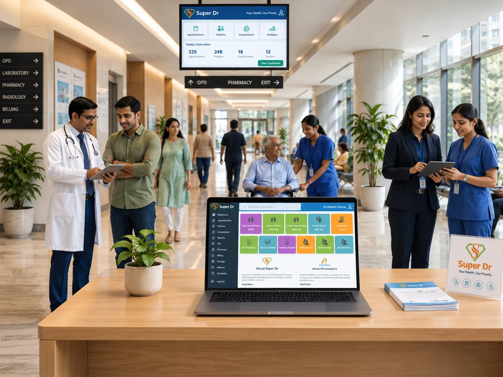
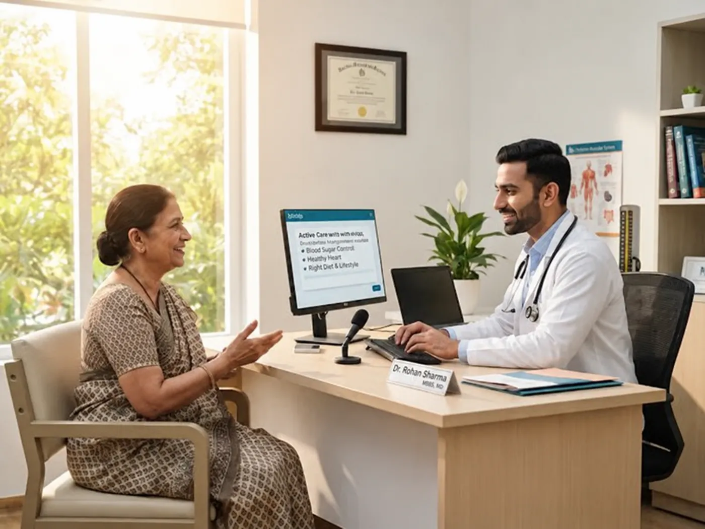
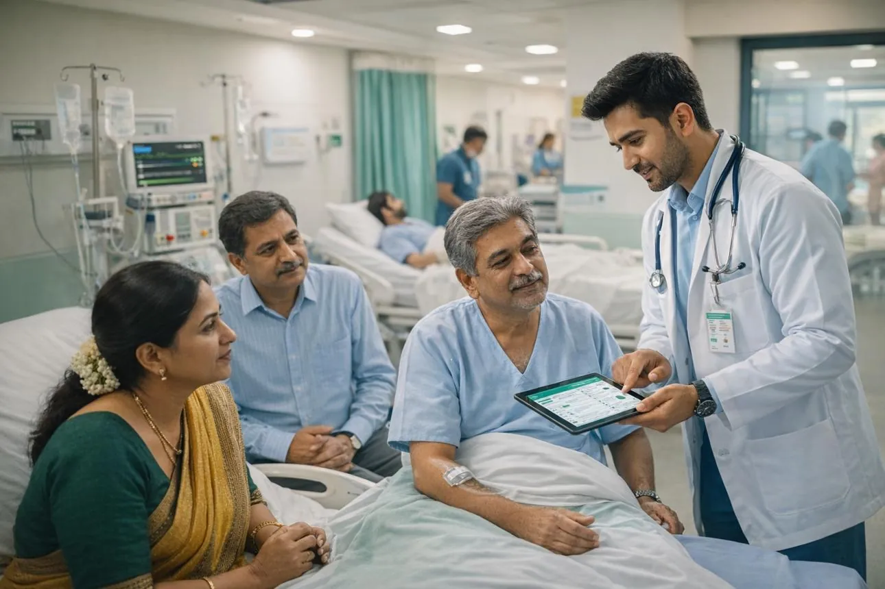
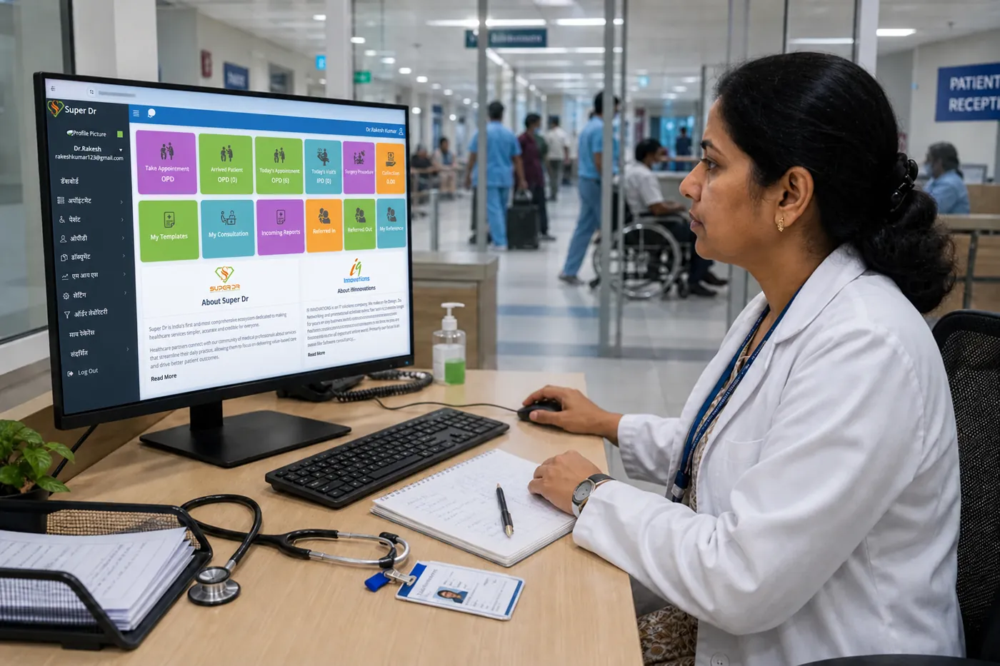

Hospital Digital Transformation with HMIS, AI & Intelligent Automation
Smarter Hospitals. Connected Departments. Better Decisions.
Modern hospitals need more than registration and billing software.
They need an intelligent, interconnected digital ecosystem that simplifies clinical workflows, automates administrative processes, strengthens financial control, improves patient engagement, and provides management with actionable information.
At VR Care, we combine over 25 years of hospital operations experience with advanced healthcare technology through Super Dr™, our integrated Healthcare Networking Platform.
From OPD registration to discharge, from pharmacy inventory to financial analytics, from doctor documentation to AI-powered patient communication, we help hospitals build connected, efficient, and scalable digital operations.
Your hospital. Your data. Your decisions. One connected ecosystem.

Your Hospital May Be Digitised. But Is It Truly Connected?
Many hospitals have invested in software, yet critical departments continue to work in isolation.
Patient information is repeatedly entered, doctors struggle with lengthy documentation, nurses spend valuable time on paperwork, and management depends on manually prepared reports.
Common challenges include:
- Disconnected software and departments
- Duplicate patient registration and data entry
- Delayed discharge and billing processes
- Poor pharmacy and inventory visibility
- Incomplete clinical documentation
- TPA and insurance claim inefficiencies
- Weak patient follow-up and CRM
- Limited real-time management reporting
- Untracked revenue leakages
- Manual HR, payroll and duty rosters
- Underutilised diagnostic and clinical resources
- Lack of integrated patient communication
We Don't Just Install Software. We Transform Hospital Workflows.
Hospital digital transformation should begin with understanding how the hospital functions, not with selecting software modules.
Our approach brings together three critical capabilities.
Hospital Operations Expertise
We evaluate existing workflows, departmental responsibilities, documentation practices, revenue cycles, and operational bottlenecks before designing the digital solution.
Integrated HMIS Through Super Dr™
We connect clinical, administrative, financial, diagnostic, pharmacy, and patient-facing functions through an integrated healthcare technology ecosystem.
AI, Automation & Business Intelligence
We introduce suitable AI-assisted workflows, automated communications, management dashboards, alerts, and predictive analytics to support faster and better-informed decisions.
Super Dr™: One Connected Healthcare Ecosystem
Super Dr is designed to bring hospitals, doctors, nurses, patients, diagnostic providers, pharmacies, and administrators onto a coordinated digital platform.
Rather than treating each department as a separate software installation, the platform connects information and workflows throughout the patient journey.
Comprehensive HMIS capabilities
Hospital Core
Registration, OPD, IPD, ER, bed management, OT scheduling, discharge
Clinical Systems
EMR, EHR, digital case sheets, nursing records, e-prescriptions
Diagnostics
LIMS, RIS, PACS, imaging workflows, report distribution
Pharmacy & Stores
Electronic indents, purchasing, inventory, expiry and stock control
Finance & Insurance
Billing, accounting, packages, TPA, insurance and revenue-cycle workflows
Administration
HRMS, payroll, rosters, assets, biomedical equipment and vendor management
Patient Engagement
CRM, appointments, reminders, follow-ups, doctor and patient mobile apps
Quality & Compliance
Digital MRD, consents, audit trails, quality indicators and accreditation documentation
Modules can be configured according to the hospital's size, specialties, infrastructure, operational priorities, and implementation scope.
Artificial Intelligence That Actually Helps Hospital Teams
AI in hospitals should not create more screens, complexity, or administrative work.
It should reduce repetitive tasks, improve responsiveness, identify operational exceptions, and help healthcare professionals focus on higher-value responsibilities.
AI Voice Agents & Patient Communication
Automate routine appointment enquiries, confirmations, reminders, follow-up calls, service information, and appropriate call routing. Escalate sensitive or urgent situations to trained personnel.

AI-Assisted Clinical Documentation
Support structured notes, reusable templates, discharge-summary drafting, and documentation checks, subject to clinician verification and approval.
Intelligent Management Alerts
Highlight pending discharges, delayed investigations, overdue insurance authorisations, stock exceptions, and operational deviations that need management attention.
Predictive Analytics & Revenue Intelligence
Analyse historical trends to support occupancy planning, demand forecasting, staffing decisions, service-line performance, and revenue-cycle monitoring.
AI functionality is deployed according to the agreed solution scope, data availability, clinical governance, and integration readiness. Clinical decisions remain with qualified healthcare professionals.
Your Hospital's Performance. Visible in Real Time.
Hospital owners and CEOs should not have to wait until the end of the month to understand how their institution is performing.
We help create executive dashboards that consolidate key clinical, operational, financial, and business indicators.
Illustrative management interface with sample data
Monthly Revenue Trend
Illustrative data only, not actual hospital performance
Indicators that matter
Clinical and operational
Bed occupancy, ALOS, OT utilisation, ICU occupancy, OPD-to-IPD conversion, investigation TAT, and discharge TAT.
Financial
ARPOB, revenue per specialty, payer mix, outstanding receivables, claim deductions, collection efficiency, and profitability indicators.
Growth
Consultant-wise business, enquiry conversion, campaign attribution, patient retention, referral performance, and service-line growth.
Quality and administration
Incident reporting, staffing, inventory expiry, equipment downtime, patient complaints, and compliance exceptions.
One Seamless Digital Patient Journey
A patient's experience begins before arriving at the hospital and continues long after discharge.
Discovery & Enquiry
Digital campaigns, website, CRM, patient enquiries and appointment requests.
Registration & Consultation
Unified patient identification, appointment scheduling, queue management and digital clinical records.
Investigations & Treatment
Electronic orders, laboratory and radiology workflows, clinical documentation and treatment planning.
Admission & Inpatient Care
Bed allocation, nursing documentation, pharmacy indents, OT scheduling and interdisciplinary coordination.
Billing & Discharge
Consolidated charges, insurance processing, discharge documentation and payment workflows.
Post-Discharge Engagement
Digital reports, medication reminders, follow-up scheduling and continuity-of-care communication.
The objective is a connected experience where patients are not repeatedly asked for the same information and staff have access to the information appropriate to their roles.

Technology Should Reduce Work, Not Add to It
A successful HMIS must work for the people who use it every day.
For Doctors
Specialty-specific templates, structured clinical notes, digital prescriptions, quick access to investigations, patient history, appointment schedules, and mobile-enabled workflows.
For Nurses
Digital nursing assessments, medication records, handover documentation, electronic indents, observation charts, and task coordination.
For Administrators
Automated reporting, departmental productivity indicators, HR workflows, duty rosters, billing visibility, and escalation mechanisms.

Digital Transformation Must Deliver Business Value
Hospital technology should contribute to measurable operational and financial improvement, not merely replace paper registers.
We focus on:
Revenue integrity
Capturing billable services accurately and reducing missed charges.
TPA efficiency
Tracking authorisations, claim submissions, deductions, receivables and payment status.
Inventory optimisation
Better purchasing decisions, stock rotation, expiry monitoring and consumption tracking.
Patient conversion
Tracking enquiries, appointments, admissions, procedures and follow-ups.
Consultant productivity
Visibility into appointments, clinical activity, service utilisation and specialty performance.
Cost control
Identifying inefficient processes, avoidable duplication and underutilised resources.
The goal is to build a hospital where financial performance is supported by reliable operational data.
Designed Around Healthcare Standards and Accountability
Digital healthcare systems must protect sensitive information while supporting clinical documentation, quality assurance, regulatory requirements, and interoperability.
Our implementation approach can incorporate:
- NABH-aligned documentation workflows
- ABDM / ABHA integration where applicable
- HL7 and relevant interoperability standards
- Role-based access and user permissions
- Audit trails and record traceability
- Digital consent and MRD management
- Data backup and recovery planning
- Privacy, security and retention controls
Compliance readiness depends on the implemented configuration, security controls, institutional policies, and applicable legal requirements. Software alone does not confer accreditation or regulatory certification.
How VR Care Implements Digital Transformation
- Digital Maturity AssessmentReview existing software, departmental workflows, infrastructure, data quality, staff readiness and reporting requirements.
- Process Mapping & Solution DesignDefine the future-state patient journey, departmental integrations, user roles, approval pathways, automation priorities and success indicators.
- Configuration, Customisation & IntegrationConfigure Super Dr modules, adapt workflows, prepare master data, and integrate approved third-party systems where technically feasible.
- Training & Controlled Go-LiveConduct role-based training, user acceptance testing, data validation and phased deployment with appropriate fallback procedures.
- Monitoring & Continuous OptimisationTrack adoption, turnaround times, data accuracy, workflow exceptions and management KPIs to guide improvements after deployment.
Flexible Digital Transformation Models
Complete Hospital Digital Transformation
Integrated HMIS deployment with process redesign, departmental onboarding, dashboards, training and post-implementation support.
Modular Implementation
Digitise selected functions such as EMR, pharmacy, TPA, diagnostics, CRM, HRMS, finance or quality management.
AI & Automation Upgrade
Add suitable voice agents, patient engagement automation, operational alerts and analytics to existing digital infrastructure.
Custom Healthcare Software Development
Build or integrate specialised applications for hospitals, clinics, diagnostic centres, pharmacies, hospital groups and third-party healthcare providers.
Hospital Operations Expertise Meets Healthcare Technology
Most software vendors understand technology. Most hospital consultants understand operations.
VR Care brings both disciplines together.
Led by Afzal Shaikh, Founder of Super Dr™ and Hospital Operations & Management Consultant, our approach is grounded in real hospital workflows, financial controls, clinical coordination, and operational accountability.
We understand that every hospital is different. A 30-bed nursing home does not operate like a 300-bed multispecialty hospital, and a high-volume surgical centre has different requirements from a diagnostic network.
Our technology strategy reflects those differences.
Related services: Hospital O&M · Hospital Audit · Hospital Turnaround · New Hospital Planning · NABH Accreditation
Frequently Asked Questions
What is hospital digital transformation?
It is the process of integrating digital systems, redesigned workflows, automation and analytics across clinical, administrative, financial and patient-facing hospital functions.
Is Super Dr suitable for small and medium-sized hospitals?
Yes. Its modular approach can support nursing homes, specialty hospitals, multispecialty hospitals and larger healthcare institutions, depending on the selected modules and deployment requirements.
Can we retain our existing hospital software?
Potentially. VR Care can assess existing systems and recommend integration, selective replacement, custom development or a phased transition, subject to technical feasibility.
Can AI be introduced without replacing our HMIS?
Yes, selected AI and automation capabilities may be introduced through APIs, CRM integrations or independent workflows, provided the existing infrastructure supports secure integration.
Can doctors use the platform on mobile devices?
Super Dr includes doctor-facing and patient-facing digital capabilities. The exact mobile functionality available depends on the implemented configuration.
Does digital transformation help with NABH accreditation?
It can strengthen documentation, traceability, quality monitoring and standardised workflows. Accreditation also requires institutional processes, training, audits and demonstrable compliance.
How long does implementation take?
Timelines depend on hospital size, module scope, customisation, data migration, integration requirements and staff readiness. A project-specific implementation plan is prepared after assessment.
How is the project priced?
Commercials depend on bed capacity, selected modules, number of locations, integrations, customisation, deployment, training and ongoing support. VR Care can provide a tailored proposal after reviewing requirements.
Ready to Build a Smarter, More Efficient Hospital?
Whether you are planning a new hospital, replacing an outdated HMIS, integrating disconnected departments, or introducing AI into daily operations, VR Care can help you develop a practical digital transformation roadmap.
Begin with a Digital Maturity Assessment. Understand what your hospital already has, what is missing, what should be integrated, and where digital transformation can deliver the greatest operational value.
Let's Discuss Your Hospital's Digital Future
Call +91 93263 30109 · Email info@vrcare.in